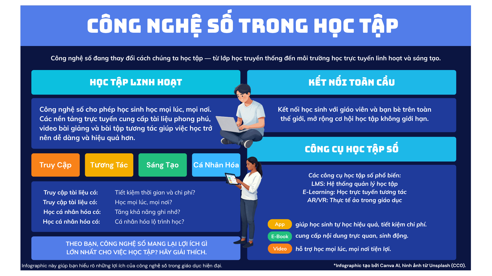

Infographic và Video minh họa
Trang web giới thiệu infographic kèm video YouTube, giúp người xem tiếp cận nội dung trực quan và sinh động hơn.
Infographic

Trang web giới thiệu infographic kèm video YouTube, giúp người xem tiếp cận nội dung trực quan và sinh động hơn.
